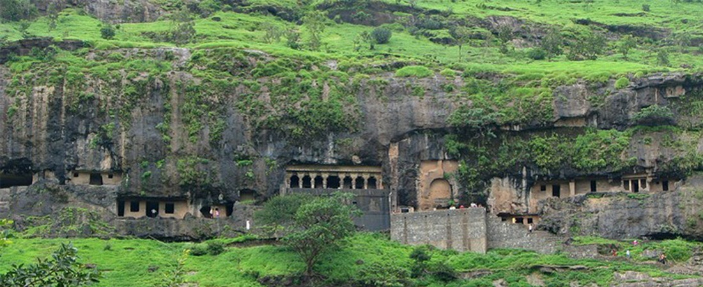
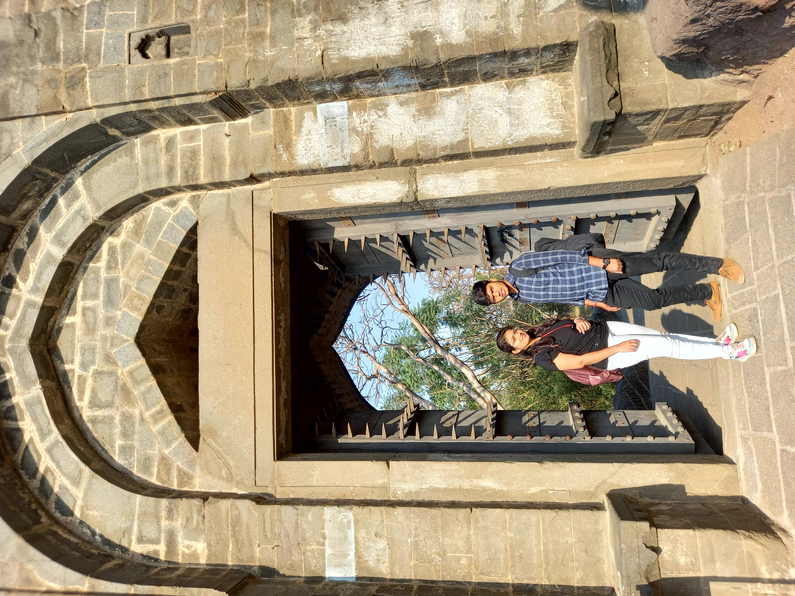
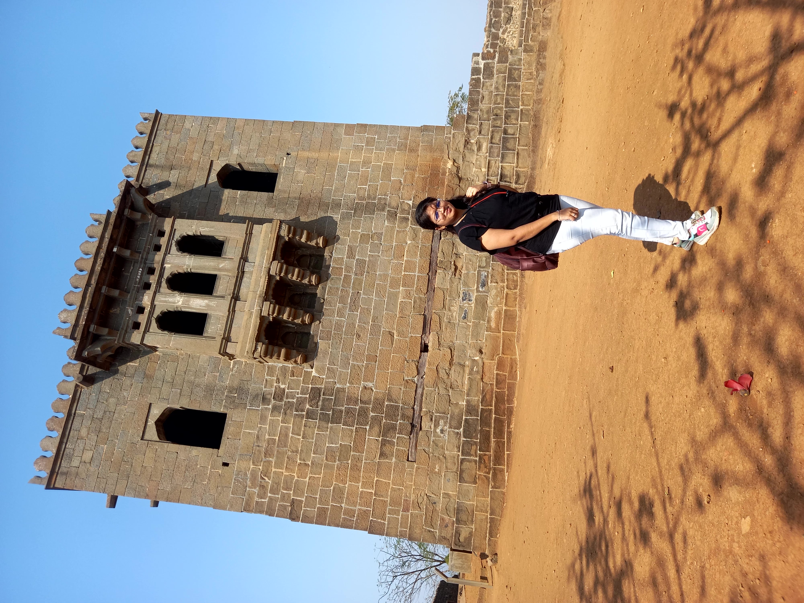
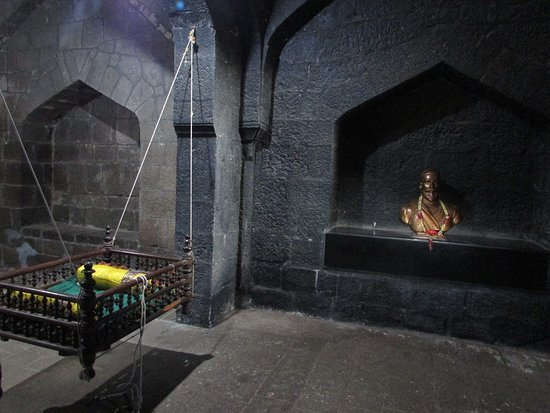

Shivneri Fort
Birth PLace of Chhatrapati Shivaji Maharaj
Introduction
Shivaneri fort is part of Junnar forest area near to Malshej Ghat. Junnar Taluka, Pune district, Maharashtra, India. The construction of Shivneri fort took place during the Yadav era. If we examine the fort's structure along with its surrounding landscape, it resembles the form of a Shivalinga, much like the statue of Lord Shiva. The fort is dedicated to the Goddess Shivai Devi, who is also the Gramdevata (village deity) of Shivneri. The birthplace of Chatrapati Shivaji Maharaj, the Maratha empire's monarch, is the Shivneri fort. Matoshri Jijamata, Shivaji's mother, named him "Shivaji" in accordance with the Goddess's name, "Shivai."History
Shivaji maharaj's father gained prominence within the Adil Shah's military, the Sultan of Bijapur. Due to the ongoing conflicts, he grew worried about ensuring the safety of his wife, Jijabai, during her pregnancy. As a result, he relocated his family to the Shivneri fort. Shivneri boasts remarkable defensibility, with steep cliffs on four sides and a robustly constructed fortress.
> Interested Places in Shivneri Fort:
1. Temple of Goddess Shivai:
When arriving at the fort through its Seven Doors, should you take a left turn from the main road after passing the fifth door known as Shipai Darvaja, you'll arrive at the temple of Goddess Shivai. Positioned behind this temple within the rocky terrain are 6-7 caves. However, these caves aren't well-suited for spending the night. Inside the temple resides an idol of Goddess Shivai.2. Ambarkhana:
After the entry in the fort from last door, Ambarkhana can be seen at the front. It has undergone lot of damage. Earlier it was used to store food grains.3. Water Tank:
On the way there are many water tanks namely Ganga, Yamuna, etc.4. Shivkunj:
This is a memorial of Shivaji Maharaj on Shivneri fort. Its foundation was laid by first Chief Minister of Maharashtra Shri Yashavantrao Chavan, and it was inaugurated also by him. Bal Shivaji ( Shivaji in his childhood) rotating his small sword and describing his dreams to his mother Jijamata, is the theme of this memorial laid in Shivkunj.
5. Place of birth of Shivaji Maharaj :
Situated in front of Shivkunj, there exists a building that marks the birthplace of Shivaji Maharaj. This two-story structure hosted his birth on the ground floor. Within this building, a statue of Shivaji Maharaj is enshrined. Right opposite this building, you'll come across a water reservoir known as Badami
6. Kadelot Kada :
The road going from the front of above place leads to Kadelot Kada ( A precipice from where a person was killed by hurling down). This sheer drop was used to award punishment to criminals.
Find delight in the images and the breathtaking scenery. I'm confident you'll appreciate them. Moreover, ensure not to overlook bringing your cameras to immortalize the splendid encounters visually.